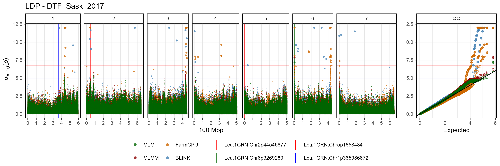
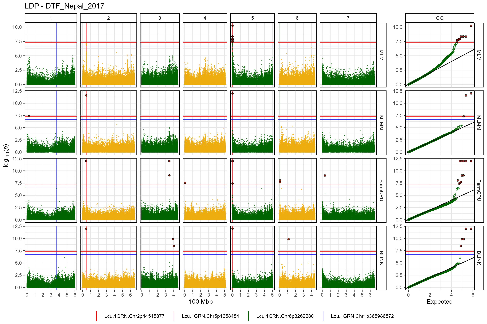
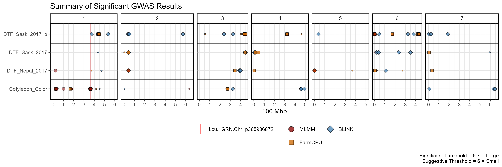
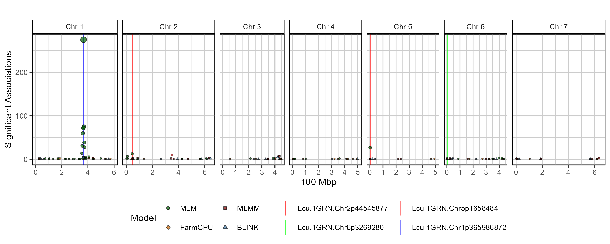
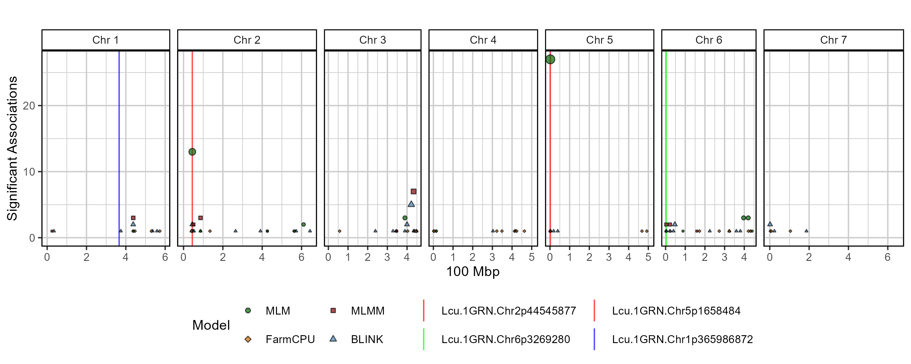

Usage
For best practice, output from GAPIT should be in its own folder. In this case, they are located in a folder called GWAS_Results/. For this example we will plot GWAS results from 3 traits in a lentil diversity panel:
- ****Cotyledon_Color**: a qualitative trait describing cotyledon color (Red = 0, Yellow = 1).
- DTF_Nepal_2017: a quantitative trait describing days from sowing to flowering in a 2017 Nepal field trial.
- DTF_Sask_2017: a quantitative trait describing days from sowing to flowering in a 2017 Saskatchewan field trial.
- DTF_Sask_2017_b: same as above but run with the b coefficient from a photothermal model (see Wright et al. 2020) used as a covariate.
Note: for more info check out this GWAS tutorial.
List Traits
myTraits <- list_Traits(folder = "GWAS_Results/")
myTraitsList Results Files
myFiles <- list_Result_Files(folder = "GWAS_Results/")
myFiles## [1] "GAPIT.Association.GWAS_Results.BLINK.Cotyledon_Color.csv"
## [2] "GAPIT.Association.GWAS_Results.BLINK.DTF_Nepal_2017.csv"
## [3] "GAPIT.Association.GWAS_Results.BLINK.DTF_Sask_2017.csv"
## [4] "GAPIT.Association.GWAS_Results.BLINK.DTF_Sask_2017_b.csv"
## [5] "GAPIT.Association.GWAS_Results.CMLM.Cotyledon_Color.csv"
## [6] "GAPIT.Association.GWAS_Results.CMLM.DTF_Nepal_2017.csv"
## [7] "GAPIT.Association.GWAS_Results.CMLM.DTF_Sask_2017.csv"
## [8] "GAPIT.Association.GWAS_Results.CMLM.DTF_Sask_2017_b.csv"
## [9] "GAPIT.Association.GWAS_Results.FarmCPU.Cotyledon_Color.csv"
## [10] "GAPIT.Association.GWAS_Results.FarmCPU.DTF_Nepal_2017.csv"
## [11] "GAPIT.Association.GWAS_Results.FarmCPU.DTF_Sask_2017.csv"
## [12] "GAPIT.Association.GWAS_Results.FarmCPU.DTF_Sask_2017_b.csv"
## [13] "GAPIT.Association.GWAS_Results.GLM.Cotyledon_Color.csv"
## [14] "GAPIT.Association.GWAS_Results.GLM.DTF_Nepal_2017.csv"
## [15] "GAPIT.Association.GWAS_Results.GLM.DTF_Sask_2017.csv"
## [16] "GAPIT.Association.GWAS_Results.GLM.DTF_Sask_2017_b.csv"
## [17] "GAPIT.Association.GWAS_Results.MLM.Cotyledon_Color.csv"
## [18] "GAPIT.Association.GWAS_Results.MLM.DTF_Nepal_2017.csv"
## [19] "GAPIT.Association.GWAS_Results.MLM.DTF_Sask_2017.csv"
## [20] "GAPIT.Association.GWAS_Results.MLM.DTF_Sask_2017_b.csv"
## [21] "GAPIT.Association.GWAS_Results.MLMM.Cotyledon_Color.csv"
## [22] "GAPIT.Association.GWAS_Results.MLMM.DTF_Nepal_2017.csv"
## [23] "GAPIT.Association.GWAS_Results.MLMM.DTF_Sask_2017.csv"
## [24] "GAPIT.Association.GWAS_Results.MLMM.DTF_Sask_2017_b.csv"
## [25] "GAPIT.Association.GWAS_Results.SUPER.Cotyledon_Color.csv"
## [26] "GAPIT.Association.GWAS_Results.SUPER.DTF_Nepal_2017.csv"
## [27] "GAPIT.Association.GWAS_Results.SUPER.DTF_Sask_2017.csv"
## [28] "GAPIT.Association.GWAS_Results.SUPER.DTF_Sask_2017_b.csv"Check Results
is_ran(folder = "GWAS_Results/")List Significant Markers
# first reorder the result files if they are not already arranged by P.value
order_GWAS_Results(folder = "GWAS_Results/", files = myFiles)
is_ordered(folder = "GWAS_Results/")## Trait MLM MLMM FarmCPU BLINK GLM CMLM SUPER
## 1 Cotyledon_Color X X X X X X X
## 2 DTF_Nepal_2017 X X X X X X X
## 3 DTF_Sask_2017 X X X X X X X
## 4 DTF_Sask_2017_b X X X X X X X
myResults <- table_GWAS_Results(folder = "GWAS_Results/", files = myFiles,
threshold = 6.8, sug.threshold = 5)
myResults[1:10,]## SNP Chr Pos P.value MAF H.B.P.Value
## 1 Lcu.1GRN.Chr1p365986872 1 365986872 7.591040e-158 0.47096774 2.553375e-152
## 2 Lcu.1GRN.Chr1p365986872 1 365986872 1.420895e-132 0.47096774 4.779422e-127
## 3 Lcu.1GRN.Chr1p365986872 1 365986872 1.526374e-101 0.47096774 5.134218e-96
## 4 Lcu.1GRN.Chr1p361840399 1 361840399 4.903122e-56 0.04193548 8.246243e-51
## 5 Lcu.1GRN.Chr4p416272481 4 416272481 7.979537e-42 0.27795031 2.684053e-36
## 6 Lcu.1GRN.Chr4p416272481 4 416272481 7.979537e-42 0.27795031 2.684053e-36
## 7 Lcu.1GRN.Chr4p416272481 4 416272481 7.979537e-42 0.27795031 2.684053e-36
## 8 Lcu.1GRN.Chr4p415952453 4 415952453 4.361101e-41 0.27484472 6.838708e-36
## 9 Lcu.1GRN.Chr4p415952453 4 415952453 4.361101e-41 0.27484472 6.838708e-36
## 10 Lcu.1GRN.Chr4p415952453 4 415952453 4.361101e-41 0.27484472 6.838708e-36
## Effect Model Trait negLog10_P negLog10_HBP Threshold
## 1 0.5033628 MLMM Cotyledon_Color 157.11970 151.59289 Significant
## 2 0.4885724 FarmCPU Cotyledon_Color 131.84744 126.32062 Significant
## 3 0.4137794 BLINK Cotyledon_Color 100.81634 95.28953 Significant
## 4 0.4990497 FarmCPU Cotyledon_Color 55.30953 50.08374 Significant
## 5 -2.9355992 CMLM DTF_Sask_2017_b 41.09802 35.57121 Significant
## 6 -2.9355992 GLM DTF_Sask_2017_b 41.09802 35.57121 Significant
## 7 -2.9355992 SUPER DTF_Sask_2017_b 41.09802 35.57121 Significant
## 8 -2.8859922 CMLM DTF_Sask_2017_b 40.36040 35.16503 Significant
## 9 -2.8859922 GLM DTF_Sask_2017_b 40.36040 35.16503 Significant
## 10 -2.8859922 SUPER DTF_Sask_2017_b 40.36040 35.16503 Significant
list_Top_Markers(folder = "GWAS_Results/", trait = "DTF_Nepal_2017",
threshold = 6.7, chroms = c(2,5))## # A tibble: 8 × 6
## SNP Chr Pos Traits Models Max_LogP
## <chr> <int> <int> <chr> <chr> <dbl>
## 1 Lcu.1GRN.Chr2p44545877 2 44545877 DTF_Nepal_2017 BLINK; CMLM; Fa… 40.1
## 2 Lcu.1GRN.Chr2p44546658 2 44546658 DTF_Nepal_2017 CMLM; GLM; MLM;… 39.8
## 3 Lcu.1GRN.Chr2p44558948 2 44558948 DTF_Nepal_2017 CMLM; GLM; MLM;… 39.5
## 4 Lcu.1GRN.Chr5p1658484 5 1658484 DTF_Nepal_2017 BLINK; CMLM; Fa… 31.7
## 5 Lcu.1GRN.Chr5p73165919 5 73165919 DTF_Nepal_2017 CMLM; GLM; SUPER 26.6
## 6 Lcu.1GRN.Chr5p73166268 5 73166268 DTF_Nepal_2017 CMLM; GLM; SUPER 26.6
## 7 Lcu.1GRN.Chr5p1650591 5 1650591 DTF_Nepal_2017 MLM 8.30
## 8 Lcu.1GRN.Chr5p1651791 5 1651791 DTF_Nepal_2017 MLM 8.30
list_Top_Markers(folder = "GWAS_Results/", trait = "DTF_Sask_2017_b",
threshold = 6.7, chroms = 6)## # A tibble: 8 × 6
## SNP Chr Pos Traits Models Max_LogP
## <chr> <int> <int> <chr> <chr> <dbl>
## 1 Lcu.1GRN.Chr6p22044874 6 22044874 DTF_Sask_2017_b CMLM; GLM; S… 36.6
## 2 Lcu.1GRN.Chr6p21968500 6 21968500 DTF_Sask_2017_b CMLM; GLM; S… 35.7
## 3 Lcu.1GRN.Chr6p22039846 6 22039846 DTF_Sask_2017_b CMLM; GLM; S… 35.6
## 4 Lcu.1GRN.Chr6p3269280 6 3269280 DTF_Sask_2017_b BLINK; FarmC… 32.9
## 5 Lcu.1GRN.Chr6p324049462 6 324049462 DTF_Sask_2017_b BLINK 13.1
## 6 Lcu.1GRN.Chr6p46982948 6 46982948 DTF_Sask_2017_b BLINK 9.10
## 7 Lcu.1GRN.Chr6p431595092 6 431595092 DTF_Sask_2017_b FarmCPU 9.04
## 8 Lcu.1GRN.Chr6p172232372 6 172232372 DTF_Sask_2017_b FarmCPU 8.71
list_Top_Markers(folder = "GWAS_Results/", trait = "Cotyledon_Color",
threshold = 6.7, chroms = 6, n = 2)## # A tibble: 2 × 6
## SNP Chr Pos Traits Models Max_LogP
## <chr> <int> <int> <chr> <chr> <dbl>
## 1 Lcu.1GRN.Chr6p390278241 6 390278241 Cotyledon_Color CMLM; GLM; S… 23.0
## 2 Lcu.1GRN.Chr6p390159188 6 390159188 Cotyledon_Color CMLM; GLM; S… 20.0
myMarkers <- c("Lcu.1GRN.Chr2p44545877", "Lcu.1GRN.Chr5p1658484",
"Lcu.1GRN.Chr6p3269280", "Lcu.1GRN.Chr1p365986872")Manhattan Plots
Multi Manhattan Plots
for(i in myTraits) {
mp <- gg_Manhattan(folder = "GWAS_Results/",
trait = i,
title = paste("LDP -", i),
threshold = 6.7,
sug.threshold = 5,
vlines = myMarkers,
vline.colors = c("red","red","darkgreen","blue"),
vline.types = c(1,1,1,1),
vline.legend = T,
facet = F,
addQQ = T,
pmax = 12,
models = c("MLM", "MLMM", "FarmCPU", "BLINK"),
model.colors = c("darkgreen", "darkred", "darkorange3", "steelblue"),
legend.rows = 2)
ggsave(paste0("man/figures/Multi_", i, ".png"),
mp, width = 12, height = 4, bg = "white")
}



Facetted Manhattan Plots
for(i in myTraits) {
mp <- gg_Manhattan(folder = "GWAS_Results/",
trait = i,
title = paste("LDP -", i),
threshold = 7.3,
sug.threshold = 6.7,
vlines = myMarkers,
vline.colors = c("red","red","darkgreen","blue"),
vline.types = c(1,1,1,1),
vline.legend = T,
facet = T,
addQQ = T,
pmax = 12,
models = c("MLM", "MLMM", "FarmCPU", "BLINK"),
chrom.colors = rep(c("darkgreen", "darkgoldenrod2"), 4),
legend.rows = 1)
ggsave(paste0("man/figures/Facet_", i, ".png"),
mp, width = 12, height = 8, bg = "white")
}


Summary Plot
mp <- gg_GWAS_Summary(folder = "GWAS_Results/",
traits = myTraits,
models = c("MLM", "MLMM", "FarmCPU", "BLINK"),
colors = c("darkgreen", "darkred", "darkorange3", "steelblue"),
threshold = 6.7, sug.threshold = 6,
hlines = c(1.5,3.5), legend.rows = 2,
vlines = myMarkers,
vline.colors = c("red", "red", "green", "blue"),
vline.types = c(1,1,1,1),
title = "Summary of Significant GWAS Results")
ggsave("man/figures/GWAS_Summary_01.png", mp, width = 12, height = 4)
mp <- gg_GWAS_Summary(folder = "GWAS_Results/",
traits = myTraits,
models = c("MLMM", "FarmCPU", "BLINK"),
colors = c("darkred", "darkorange3", "steelblue"),
threshold = 6.7, sug.threshold = 6,
hlines = c(1.5,3.5), legend.rows = 2,
vlines = myMarkers,
vline.colors = c("red", "red", "green", "blue"),
vline.types = c(1,1,1,1),
title = "Summary of Significant GWAS Results")
ggsave("man/figures/GWAS_Summary_02.png", mp, width = 12, height = 4)
GWAS Hits Plot
# Prep
myG <- read.csv("myG_hmp.csv", header = T)
# Plot
mp <- gg_GWAS_Hits(xx = myResults,
xG = myG,
xCV = NULL,
traits = list_Traits("GWAS_Results/"),
range = 2000000,
title = "",
sigMin = 0,
models = c("MLM", "MLMM", "FarmCPU", "BLINK"),
model.colors = c("darkgreen", "darkred", "darkorange3", "steelblue"),
model.shapes = 21:24,
vlines = myMarkers,
vline.colors = c("red", "red", "green", "blue"),
vline.types = rep(1, length(vlines)),
legend.rows = 2)
ggsave("man/figures/GWAS_Hits_01.png", mp, width = 10, height = 4)
# Plot
mp <- gg_GWAS_Hits(xx = myResults,
xG = myG,
xCV = NULL,
traits = c("DTF_Nepal_2017", "DTF_Sask_2017", "DTF_Sask_2017_b"),
range = 2000000,
title = "",
sigMin = 0,
models = c("MLM", "MLMM", "FarmCPU", "BLINK"),
model.colors = c("darkgreen", "darkred", "darkorange3", "steelblue"),
model.shapes = 21:24,
vlines = myMarkers,
vline.colors = c("red", "red", "green", "blue"),
vline.types = rep(1, length(vlines)),
legend.rows = 2)
ggsave("man/figures/GWAS_Hits_02.png", mp, width = 10, height = 4)